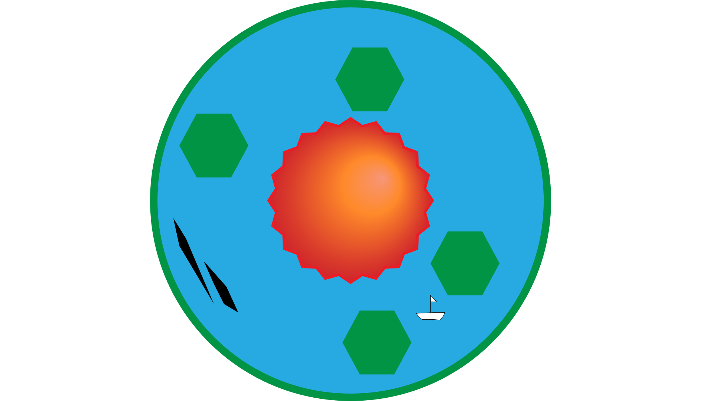
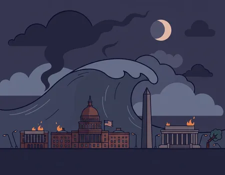

THE WORLD IS ENDING!
Can/Will you survive?
BREAKING NEWS!
Hawaii goes up in flames

Read more about this important news
Hawaii Devastated by Unprecedented Volcanic Eruptions and Tsunamis
Hawaii has been struck by a catastrophic wave of natural disasters, leaving widespread destruction across the islands and thousands feared displaced.
Early yesterday morning, residents reported unusual ocean activity as waters receded dramatically along the coastline. Within hours, powerful earthquakes shook the region, triggering simultaneous volcanic eruptions—most notably at Kīlauea, where massive lava flows rapidly engulfed nearby communities.
Authorities struggled to respond as ash clouds darkened the sky and infrastructure began to fail. Major roads became impassable, and emergency services were overwhelmed by the scale of the crisis. The situation worsened when seismic activity beneath the Pacific Ocean generated large tsunami waves that struck coastal areas, destroying buildings and sweeping inland. In Honolulu, entire districts were severely damaged as floodwaters collided with advancing lava flows, creating hazardous steam explosions. Officials have urged immediate evacuation where possible, though options remain limited due to ongoing volcanic activity and damaged transport routes.
Experts describe the event as highly unusual, with multiple geological systems erupting at once. While rescue efforts are underway, the full extent of the damage—and the potential loss of life—remains unclear. Authorities continue to monitor the situation as aftershocks and eruptions persist.
Washington DC - President dead

Read more about this important news
Massive Tsunami Devastates Washington Coast, Floodwaters Reach Inland Cities
Washington State has been struck by a powerful tsunami following intense seismic activity off the Pacific coast, causing widespread destruction and forcing mass evacuations.
The event began early this morning with a huge offshore earthquake that triggered immediate tsunami warnings. Coastal communities had only minutes to react before waves—some towering over buildings—crashed ashore, sweeping away homes, vehicles, and infrastructure.
Emergency sirens sounded across cities including Seattle, but evacuation efforts were hampered by traffic congestion and limited escape routes. Eyewitnesses described walls of water surging through streets, overwhelming waterfront districts and pushing far beyond expected flood zones. Authorities report that the tsunami continued inland via rivers and low-lying areas, flooding neighborhoods and crippling power and communication systems. In several areas, buildings were uprooted or submerged entirely.
Rescue operations are underway, though officials warn conditions remain dangerous due to strong currents, debris, and potential aftershocks. Residents have been urged to move to higher ground and avoid coastal regions. Experts say the scale and reach of the tsunami are unprecedented for the region, raising concerns about long-term impacts on infrastructure and communities. The full extent of casualties and damage is still being assessed as emergency crews continue search and rescue efforts.